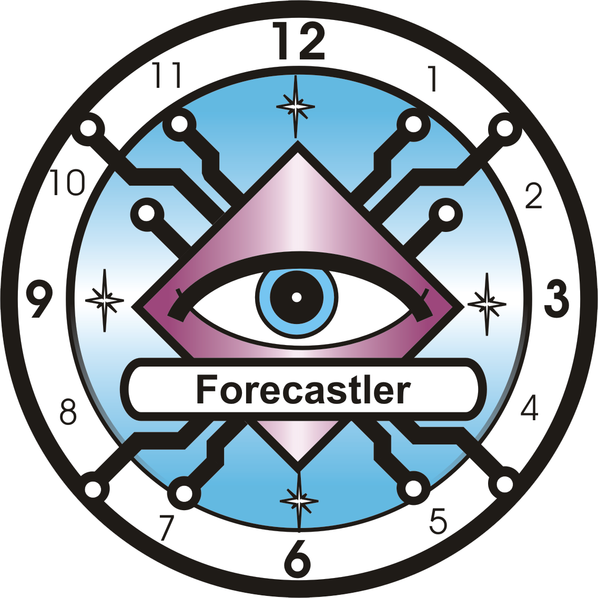

Forecastler
By June 2025, five earthquakes of magnitude above 7 on the Richter scale had been recorded worldwide, the strongest of which struck Myanmar on March 28. The last earthquake exceeding magnitude 8 on the Richter scale occurred on August 12, 2021, in the South Sandwich Islands.
Question for AI: Will planet Earth be hit by an earthquake exceeding magnitude 8 on the Richter scale during 2025?
AI answer: YES. Probability 65%
Asteroids pose a potential threat to planet Earth. The last significant impact event occurred on February 15, 2013, when, after entering Earth’s atmosphere, a celestial body exploded over the Russian city of Chelyabinsk, damaging about 7,000 buildings and injuring roughly 1,500 people.
Question for AI: By 2030, will an asteroid strike Earth, causing casualties and material damage?
AI answer: NO. Probability 5%
Human influence has contributed to the warming of the atmosphere, oceans, and land, with consequences that include increasingly frequent extreme heat. The year 2024 was recorded as the warmest on record, about 1.55 degrees Celsius above the pre-industrial average.
Question for AI: Will 2025 be the warmest year on record?
AI answer: NO. Probability 25%
You can also ask the AI about your future or the future of other people, objects, places, and events.